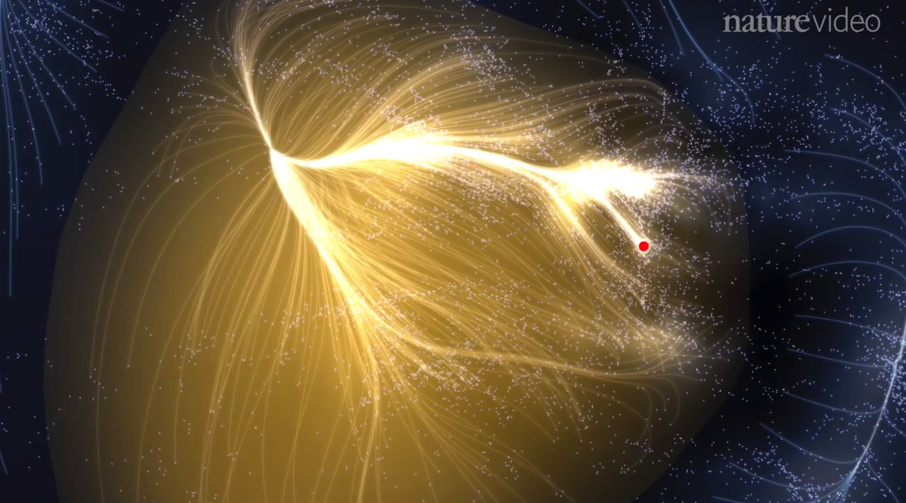
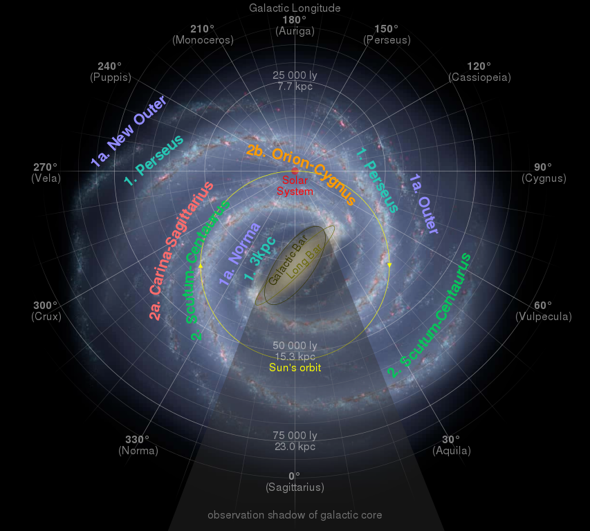
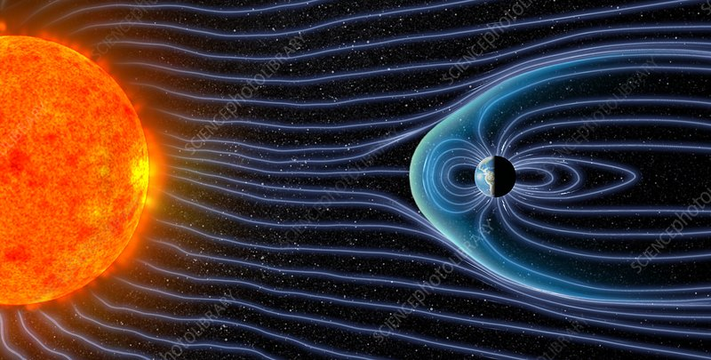
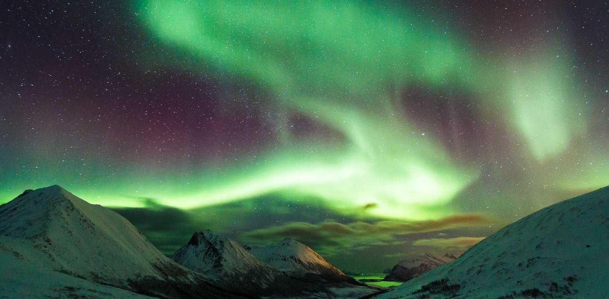

Astronomy
"Man must rise above the Earth—to the top of the atmosphere and beyond—for only thus will he fully understand the world in which he lives."
- Socrates, Philosopher
Our Celestial Address
Our Super Cluster: Laniakea

On the largest cosmic scales of all, planet Earth appears to be anything but special. Like hundreds of billions of other planets in our galaxy, we orbit our parent star; like hundreds of billions of solar systems, we revolve around the galaxy; like the majority of galaxies in the Universe, we're bound together in either a group or cluster of galaxies. And, like most galactic groups and clusters, we're a small part of a larger structure containing over 100,000 galaxies: a supercluster.
Ours is named Laniakea: the Hawaiian word for "immense heaven".
Our Galaxy: Milky Way

The Milky Way has four main spiral arms: the Norma and Cygnus arm, Sagittarius, Scutum-Crux, and Perseus.
The Sun is located in a minor arm, or spur, named the Orion Spur.
Our Solar System

See those small rings...?
Those are the Planetary Orbits. Solar System extends way beyond it.
The Oort Cloud is the most distant region of our solar system. Even the nearest objects in the Oort Cloud are thought to be many times farther from the Sun than the outer reaches of the Kuiper Belt.
Some Amazing Facts!
Earth's Magneto-Sphere
The magnetosphere is the region of space surrounding Earth where the dominant magnetic field is the magnetic field of Earth, rather than the magnetic field of interplanetary space. The magnetosphere is formed by the interaction of the solar wind with Earth’s magnetic field. This figure illustrates the shape and size of Earth’s magnetic field that is continually changing as it is buffeted by the solar wind.
Northern Lights
When the solar wind gets past the magnetic field and travels towards the Earth, it runs into the atmosphere. The atmosphere is like a big blanket of gas surrounding our planet, which contains lots of different particles that make up the air that we breathe and help to protect us from harmful radiation from the Sun.
As the protons and electrons from the solar wind hit the particles in the Earth’s atmosphere, they release energy – and this is what causes the northern lights.